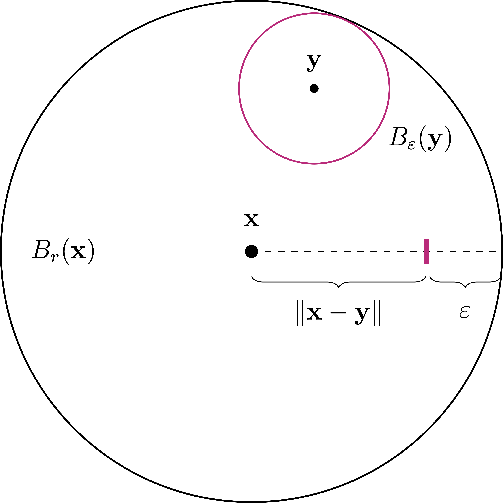

4 Topology
So far we have worked in \(\mathbb{R}^n\), where for example we have the notions of open set, continuous function and compact set. Topology is what allows us to extend these notions to arbitrary sets.
Definition 1: Topological space
Let \(X\) be a set and \(\mathcal{T}\) a collection of subsets of \(X\). We say that \(\mathcal{T}\) is a topology on \(X\) if the following 3 properties hold:
(A1) We have \(\emptyset, X \in \mathcal{T}\),
(A2) If \(\{A_i\}_{i \in I}\) is an arbitrary family of elements of \(\mathcal{T}\), then \[ \bigcup_{i \in I} A_i \in \mathcal{T}\,. \]
(A3) If \(A,B \in \mathcal{T}\) then \[ A \cap B \in \mathcal{T}\,. \]
Further, we say:
- The pair \((X,\mathcal{T})\) is a topological space.
- The elements of \(X\) are called points.
- The sets in the topology \(\mathcal{T}\) are called open sets.
Remark 2
The intersection property of \(\mathcal{T}\), Property (A3) in Definition 1, is equivalent to the following:
- (A3’) If \(A_1, \ldots, A_M \in \mathcal{T}\) for some \(M \in \mathbb{N}\), then \[ \bigcap_{n=1}^M A_n \in \mathcal{T}\,. \]
The equivalence between (A3) and (A3’) can be immediately obtained by induction.
Warning
Notice:
- The union property (A2) of \(\mathcal{T}\) holds for an arbitrary number of sets, even uncountable!
- The intersection property (A3’) of \(\mathcal{T}\) holds only for a finite number of sets.
There are two main examples of topologies that one should always keep in mind. These are:
- Trivial topology: The topology with the smallest possible number of sets.
- Discrete topology: The topology with the highest possible number of sets.
Definition 3: Trivial topology
Let \(X\) be a set. The trivial topology on \(X\) is the topology \(\mathcal{T}\) defined by \[ \mathcal{T}:= \{ \emptyset , X \} \,. \]
Let us check that \(\mathcal{T}\) is indeed a topology. We need to verify the 3 properties of a topology:
- (A1) We clearly have \(\emptyset , X \in \mathcal{T}\).
- (A2) The only non-trivial union to check is the one between \(\emptyset\) and \(X\). We have \[ \emptyset \cup X = X \in \mathcal{T}\,. \]
- (A3) The only non-trivial intersection to check is the one between \(\emptyset\) and \(X\). We have \[ \emptyset \cap X = \emptyset \in \mathcal{T}\,. \]
Therefore \(\mathcal{T}\) is a topology on \(X\).
Definition 4: Discrete topology
Let \(X\) be a set. The discrete topology on \(X\) is the topology \(\mathcal{T}\) defined by \[ \mathcal{T}:= \{ A \, \colon \,A \subset X \} \,, \] that is, every subset of \(X\) is open.
Let us check that \(\mathcal{T}\) is a topology:
(A1) We have \(\emptyset , X \in \mathcal{T}\), since \(\emptyset\) and \(X\) are subsets of \(X\).
(A2) The arbitrary union of subsets of \(X\) is still a subset of \(X\). Therefore \[ \bigcup_{i \in I} A_i \in \mathcal{T}\,, \] whenever \(A_i \in \mathcal{T}\) for all \(i \in I\).
(A3) The intersection of two subsets of \(X\) is still a subset of \(X\). Therefore \[ A \cap B \in \mathcal{T}\,, \] whenever \(A, B \in \mathcal{T}\).
Therefore \(\mathcal{T}\) is a topology on \(X\).
We anticipated that topology is the extension of familiar concepts of open set, continuity, etc. that we have in \(\mathbb{R}^n\). Let us see how the usual definition of open set of \(\mathbb{R}^n\) can fit in our new abstract framework of topology.
Definition 5: Open set of \(\mathbb{R}^n\)
See Figure 4.1 for a schematic picture of an open set.

Definition 6: Euclidean topology of \(\mathbb{R}^n\)
The Euclidean topology on \(\mathbb{R}^n\) is the topology \(\mathcal{T}\) defined by \[ \mathcal{T}:= \{ A \, \colon \,A \subset \mathbb{R}^n \,, \,\, A \, \mbox{ is open} \} \,. \]
Let us check that \(\mathcal{T}\) is a topology on \(\mathbb{R}^n\):
(A1) We have \(\emptyset , \mathbb{R}^n \in \mathcal{T}\): Indeed \(\emptyset\) is open because there is no point \(x\) for which (4.1) needs to be checked. Moreover \(\mathbb{R}^n\) is open because (4.1) holds with any radius \(r>0\).
(A2) Let \(A_i \in \mathcal{T}\) for all \(i \in I\) and define the union set \[ A:=\bigcup_{i \in I} A_i \,. \] We need to check that \(A\) is open. Let \(x \in A\). By definition of union, there exists an index \(i_0 \in I\) such that \(x \in A_{i_0}\). Since \(A_{i_0}\) is open, by (4.1) there exists \(r>0\) such that \(B_r(x) \subset A_{i_0}\). As \(A_{i_0} \subset A\), we conclude that \(B_r(x) \subset A\). Thus \(A\) is open and \(A \in \mathcal{T}\).
(A3) Let \(A, B \in \mathcal{T}\). We need to check that \(A \cap B\) is open. Let \(x \in A \cap B\). Therefore \(x \in A\) and \(x \in B\). Since \(A\) and \(B\) are open, by (4.1) there exist \(r_1,r_2>0\) such that \(B_{r_1}(x) \subset A\) and \(B_{r_2}(x) \subset B\). Set \(r := \min\{ r_1,r_2\}\). Then \[ B_r(x) \subset B_{r_1}(x) \subset A \,, \quad B_r(x) \subset B_{r_2}(x) \subset B \,, \] Hence \(B_r(x) \subset A \cap B\), showing that \(A \cap B\) open, so that \(A \cap B \in \mathcal{T}\).
This proves that \(\mathcal{T}\) is a topology on \(\mathbb{R}^n\).
Let us make a basic bus useful observation: balls in \(\mathbb{R}^n\) are open for the Euclidean topology.
Proposition 7
Proof

Theorem 8
4.1 Convergence
We have generalized the notion of open set to arbitrary sets. Next we generalize the notion of convergence of sequences.
Definition 9: Convergent sequence
Notation
Let us analyze the definition of convergence in the topologies we have encountered so far. We will have that:
- Trivial topology: Every sequence converges to every point.
- Discrete topology: A sequence converges if and only if it is eventually constant.
- Euclidean topology: Topological convergence coincides with classical notion of convergence.
We now precisely state and prove the above claims.
Proposition 10: Convergence for trivial topology
Proof
\(U = \emptyset\): This case is not possible, since \(x_0\) cannot be in \(U\).
\(U = X\): Take \(N=1\). Since \(U\) is the whole space, then \(x_n \in U\) for all \(n \geq 1\).
As these are all the open sets, we conclude that \(x_n \to x_0\).
Proposition 11: Convergence for discrete topology
Let \((X,\mathcal{T})\) be topological space, with \(\mathcal{T}\) the discrete topology, that is, \[ \mathcal{T}= \{ A \, \colon \,A \subset X \} \,. \] Let \(\{x_n\} \subset X\) be a sequence and \(x_0 \in X\) a point. They are equivalent:
- \(x_n \to x_0\).
- \(\{x_n\}\) is eventually constant, that is, there exists \(N \in \mathbb{N}\) such that \[ x_n = x_0 \,, \quad \forall \, n \geq N \,. \]
Proof
We have to prove that \(\{x_n\}\) is eventually constant. To this end, let \[ U = \{x_0\} \,. \] Then \(U \in \mathcal{T}\). Since \(x_n \to x_0\), by (4.3) there exists \(N \in \mathbb{N}\) such that \[ x_n \in U \,, \quad \forall \, n \geq N \,. \] As \(U = \{x_0\}\), the above is saying that \(x_n = x_0\) for all \(n \geq N\). Hence \(x_n\) is eventually constant.
Part 2. Assume that \(x_n\) is eventually equal to \(x_0\).
By assumption there exists \(N \in \mathbb{N}\) such that \[ x_n = x_0 \,, \quad \forall \, n \geq N \,. \tag{4.4}\] Let \(U \in \mathcal{T}\) be an open set such that \(x_0 \in U\). By (4.4) we have that \[ x_n \in U \,, \quad \forall \, n \geq N \,. \] Since \(U\) was arbitrary, we conclude that \(x_n \to x_0\).
Proposition 12: Convergence for Euclidean topology
Let \(\mathbb{R}^n\) be equipped with \(\mathcal{T}\) the Euclidean topology. Let \(\{x_n\} \subset \mathbb{R}^n\) be a sequence and \(x_0 \in \mathbb{R}^n\) a point. They are equivalent:
- \(x_n \to x_0\) with respect to \(\mathcal{T}\).
- \(x_n \to x_0\) in \(\mathbb{R}^n\), that is, \[ \lim_{n \to \infty} \left\| x_n - x_0 \right\| = 0 \,. \]
4.2 Metric spaces
Definition 13: Metric space
The distance is non-negative \[ d(x,y) \geq 0 \,. \] Moreover \(d(x,y) = 0\) if and only if \(x=y\).
The distance is symmetric: \[ d(x,y) = d(y,x) \,. \]
The triangle inequality holds: \[ d(x,z) \leq d(x,y) + d(y,z) \,. \]
We say that the pair \((X,d)\) is a metric space.